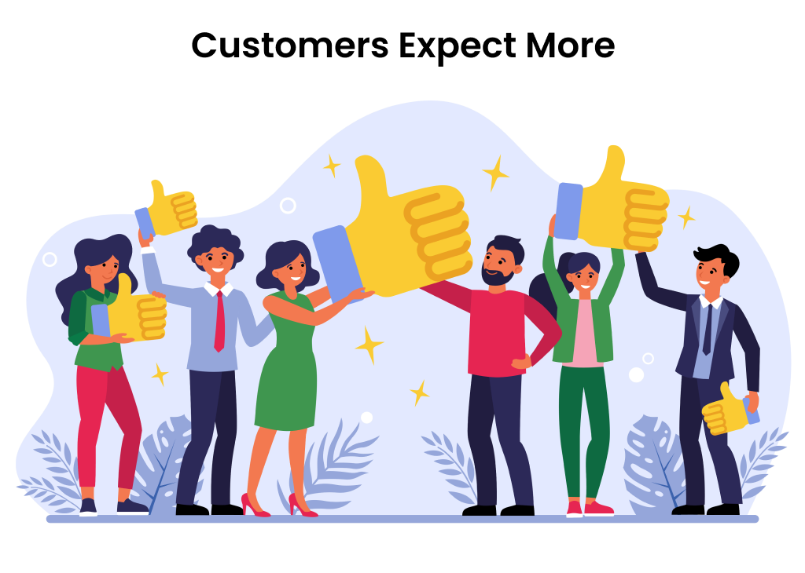

How Did the Fourth Industrial Revolution Start?
At the turn of the century, things were changing again. If you can imagine it, the pace of innovation was once again speeding up.
In his book The Fourth Industrial Revolution, Klaus Schwab describes it like this: “It began at the turn of this century and builds on the digital revolution. It is characterised by a much more ubiquitous and mobile Internet, by smaller and more powerful sensors that have become cheaper, and by artificial intelligence and machine learning.”
Erik Brynjolfsson and Andrew McAfee, professors at the Massachusetts Institute of Technology, describe this period as “the second machine age.” And while digital technologies are not new, they’re being used in new ways.
Just like the first three industrial revolutions, the Fourth Industrial Revolution is radically changing the world around us.
What Is the Fourth Industrial Revolution?
It’s a smarter, more connected world. And it’s being built around us right now.
Let’s think back to the first industrial revolution. What was the innovation that powered that revolution?
That’s right, steam power. Well, in the Fourth Industrial Revolution, we’ve got new innovations pushing us
forward, in the form of the cloud, social, mobile, IoT, and AI. Pair those with higher computing power and
big data, and here comes the next industrial revolution. In the forthcoming book Shaping the Fourth Industrial
Revolution, Klaus Schwab and co-authors Nicholas Davis and Thomas Philbeck note that, “The Fourth Industrial
Revolution is a way of describing a set of ongoing and impending transformations in the systems that surround us, and which most of us take for granted every day.”
Think about those words. What do you take for granted right now? How about the app that tells you the best
route to work, or the device on your wrist that tells you how many steps you took today? What about the sensor in your car that stops you before you veer into the next lane? Or the sign at the bus stop that updates you in real time about when you can expect the next bus?
The innovations are real and they’re already here, and more are arriving daily. The Fourth Industrial
Revolution has already begun.
How Is the Fourth Different from the Third Industrial Revolution?
Great question! Yes, it can seem like the line between this revolution and the digital revolution
is a bit murky. So how do we draw the line? According to Schwab, there are three key factors which differentiate between the two:
-Velocity - The world is more connected than ever before, and this revolution is transforming the world far more
quickly than the first three did.
-Breadth and depth - Salesforce CEO Marc Benioff observes, “The convergence of digital technologies with breakthroughs in
materials science and biology means that we are seeing the emergence of entirely new ways in which to
live. In both subtle and explicit ways, technology is also changing what it means to be human.”
-Systems impact - Fourth Industrial Revolution advances are so sophisticated and interconnected that they’re transforming
major systems (politics and the economy, for example) as well as entire countries and societies.
Why Is the Fourth Industrial Revolution Happening?
Every industrial revolution is driven by innovation, usually in the form of new technologies. Once these
technologies become cheap enough to scale and spread, they change society. One steam engine in a scientist’s
laboratory is a good proof of concept. But hundreds of steam engines powering a railroad system transforms an entire nation.
In the Fourth Industrial Revolution, key factors driving the incredible changes we’re experiencing
include the decreasing cost of computing power and connected devices; the ease of using sophisticated
algorithms, machine learning, and other forms of artificial intelligence; and the radical drop in the price of genetic sequencing.
Smart and connected machines and systems are helping us build self-driving cars, create virtual assistants,
and diagnose disease more precisely—transforming the physical, digital, and biological worlds.
Understand the Impact of the Fourth Industrial Revolution on Business
In Technologies and Trends of the Fourth Industrial Revolution, you learned about the 10 technologies behind the Fourth Industrial Revolution. If those 10 technologies are the cause, then this module explains the effect. One of the main effects of the Fourth Industrial Revolution is increased human productivity. With technologies like AI and automation augmenting our professional lives, we’re able to make smart choices, faster than ever before. But it’s not all rosy, and we’re not trying to sugarcoat things for you. There are some hefty moral and ethical implications for many of these innovations, and in some cases, we’re left with more questions than answers. In this module, we talk about the impact of the Fourth Industrial Revolution, including the positive and the potentially negative.
These Days, Customers Expect More
Customers today expect to get an answer anytime, on any channel they choose. Whether they tweet, email, chat, or call, they want instant, personalized service. So how did they come to expect that? Well, the technologies around us have evolved, bringing customer expectations with them. Think about it—just 20 years ago, companies like Google, Alibaba, Facebook, Twitter, YouTube, Uber, Airbnb, Salesforce, Snapchat, Instagram, Fitbit, Spotify, and WeChat did not exist. Make no mistake about it, the services these companies provide have raised the bar for the customer experience. How can you expect a customer to wait on hold when they’re used to the speed of interaction on social media? Or when the answer to any question is one Google search away? And let’s not forget the millennial generation. They grew up on digital technology, and they now make up more than half the workforce. As consumers, they expect businesses to anticipate their needs and provide personalised support. Customers, whether as individuals (B2C) or businesses (B2B), are increasingly at the center of what’s known as the digital economy, which is a fancy way of saying the economy that’s built on Internet-based and digital technologies. To be successful, businesses need to shift from a transactional model, focused solely on selling products, to a relationship model, built around selling services and creating deeper connections with customers. 
Below, you can see the professinal's research about the increasing customer's expectations in 2022.